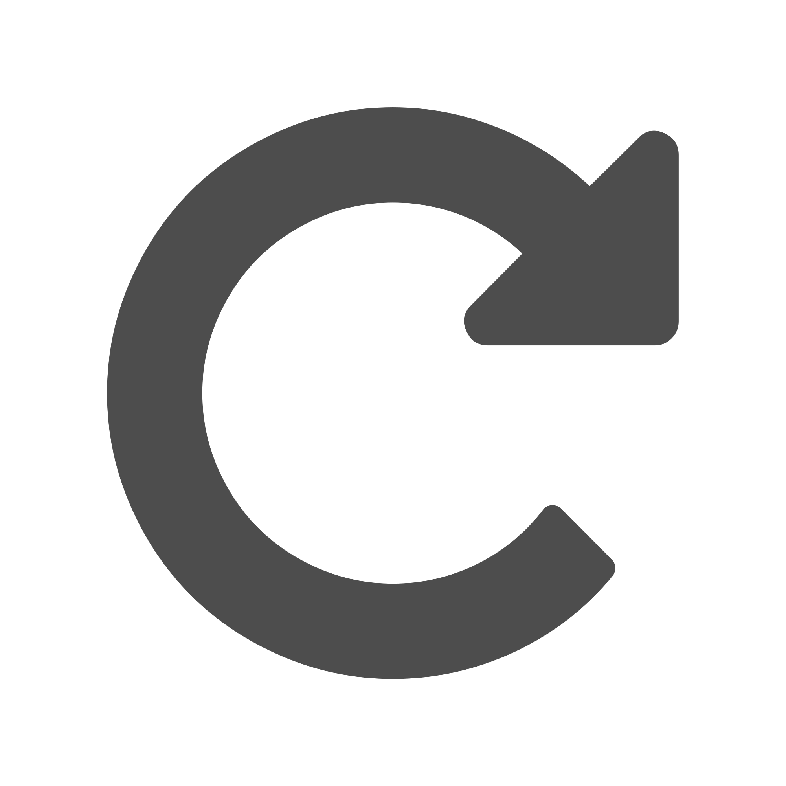
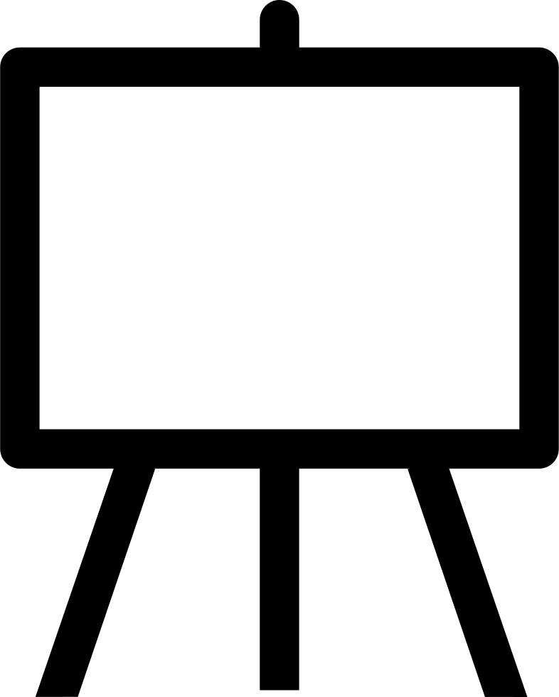
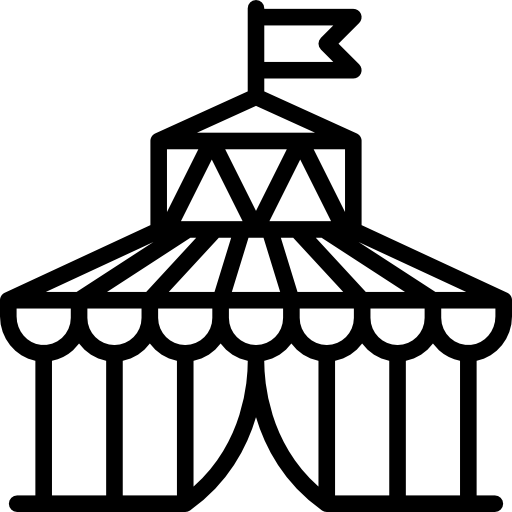
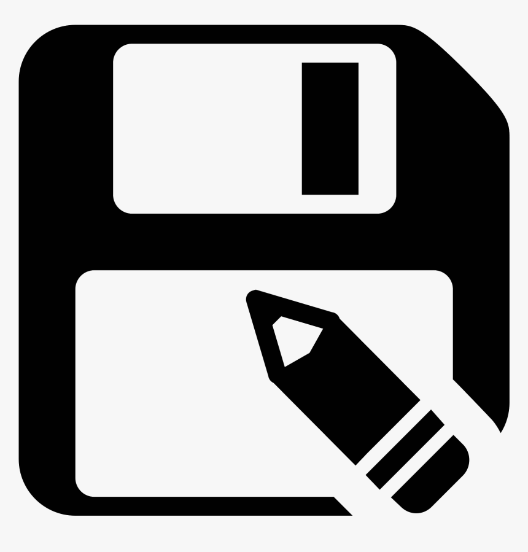
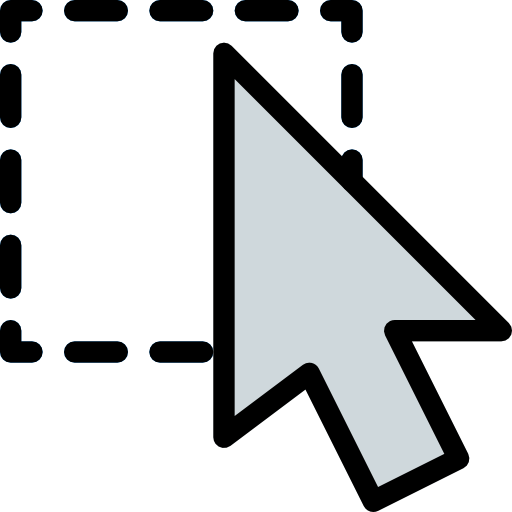

Ce bouton te ramène à la page principale
Ce bouton active l'outil crayon. Le raccourci est 'c'

Ce bouton active l'outil ligne. Le raccourci est 'l'

Ce bouton active l'outil rectangle. Le raccourci est '1'
Ce bouton active l'outil d'ellipse. Le raccourci est '2'
Ce bouton active l'outil d'aerosol. Le raccourci est 'a'

Ce bouton annule la derniere action. Le raccourci est 'Ctrl+z'

Ce bouton refait la prochaine action. Le raccourci est 'Ctrl+Shift+z'

Ce bouton crée un nouveau dessin . Le raccourci est 'Ctrl+o'
Ce bouton crée un nouveau dessin. Le raccourci est 'Ctrl+o'

Ce bouton exporte le dessin . Le raccourci est 'Ctrl+e'
Ce bouton ouvre le carousel . Le raccourci est 'Ctrl+g'

Ce bouton permet de sélectionner toute la surface de dessin. Le raccourci est 'Ctrl+a'
Ce bouton sauvegarde le dessin sur le serveur. Le raccourci est 'Ctrl+s'

Ce bouton permet de faire une sélection rectangulaire. Le raccourci est 'r'
